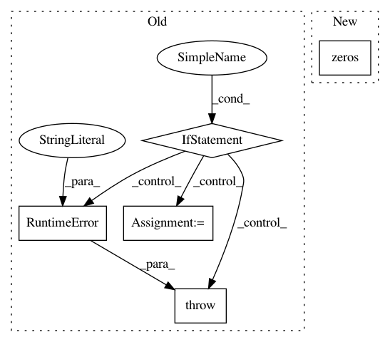

9c526695805c9639896b31364958d0e77bdeba62,gpytorch/kernels/matern_kernel.py,MaternKernel,__init__,#MaternKernel#Any#Any#Any#Any#Any#Any#,80
Before Change
def __init__(self, nu=2.5, ard_num_dims=None, batch_size=1, active_dims=None, log_lengthscale_prior=None, eps=1e-6):
if nu not in {0.5, 1.5, 2.5}:
raise RuntimeError("nu expected to be 0.5, 1.5, or 2.5")
super(MaternKernel, self).__init__(
has_lengthscale=True,
ard_num_dims=ard_num_dims,
batch_size=batch_size,
active_dims=active_dims,
log_lengthscale_prior=log_lengthscale_prior,
eps=eps,
)
self.nu = nu
def forward(self, x1, x2, **params):
mean = x1.contiguous().view(-1, 1, x1.size(-1)).mean(0, keepdim=True)
After Change
>>> covar_module = gpytorch.kernels.ScaleKernel(gpytorch.kernels.MaternKernel(nu=0.5))
>>> // Batch: different lengthscale for each batch
>>> covar_module = gpytorch.kernels.ScaleKernel(gpytorch.kernels.MaternKernel(nu=0.5, batch_size=2))
>>> covar = covar_module(x) // Output: LazyVariable of size (2 x 10 x 10)
def __init__(
In pattern: SUPERPATTERN
Frequency: 3
Non-data size: 5
Instances
Project Name: cornellius-gp/gpytorch
Commit Name: 9c526695805c9639896b31364958d0e77bdeba62
Time: 2018-11-14
Author: gardner.jake@gmail.com
File Name: gpytorch/kernels/matern_kernel.py
Class Name: MaternKernel
Method Name: __init__
Project Name: cornellius-gp/gpytorch
Commit Name: 38a40828ec688be626e51ebcb1a60a54479fd997
Time: 2017-08-29
Author: ruihan.wu14@gmail.com
File Name: gpytorch/lazy/toeplitz_lazy_variable.py
Class Name: ToeplitzLazyVariable
Method Name: diag
Project Name: kundajelab/dragonn
Commit Name: 9c158b87f5fb2dca1ed95884e667ab2fc218e1b7
Time: 2017-05-01
Author: jisraeli@stanford.edu
File Name: dragonn/models.py
Class Name: SequenceDNN
Method Name: deeplift